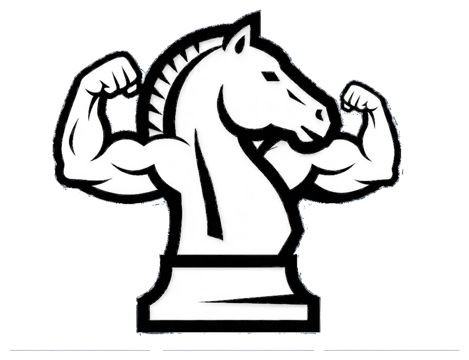

A chess trainer built around your own games.
For help, bug reports, or feedback, email us and we'll get back to you as soon as we can:
How does ChessMogg get my games?
You enter your Chess.com username in the app, and ChessMogg fetches your public games directly from Chess.com's public API. No account or password is required.
Does analysis require an internet connection?
Chess engine analysis runs entirely on your device using a local engine — only fetching your games from Chess.com needs a connection.
How do I manage or cancel my subscription?
Subscriptions are managed through your Apple ID. Go to Settings → [Your Name] → Subscriptions on your iPhone to view, change, or cancel.
How do I request a refund?
Refunds for App Store purchases are handled by Apple directly — visit reportaproblem.apple.com.